Marumori
Marumori · Miyagi
Marumori
Highlighted on the Miyagi map.
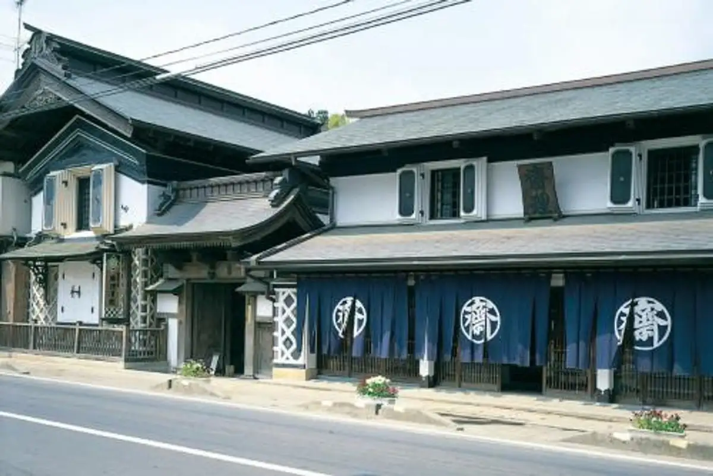
Stay
あぶくま荘
Abukuma Sou
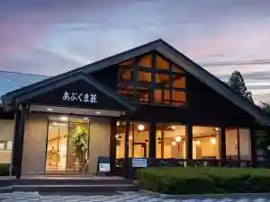
Dining
きく屋
Kiku Ya
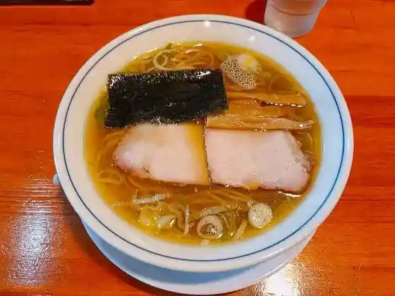
栄泉堂 大内本店
Sakae Sendou Oouchi Honten
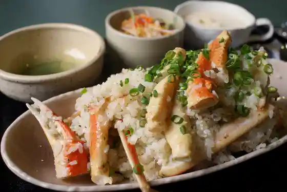
緑山
Midoriyama
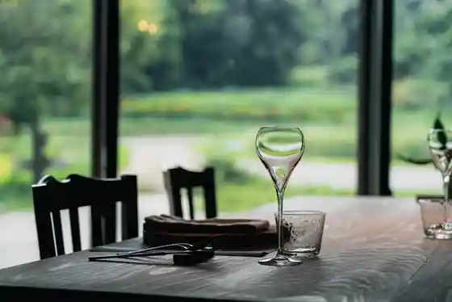
Restaurant Es
Restaurant Es
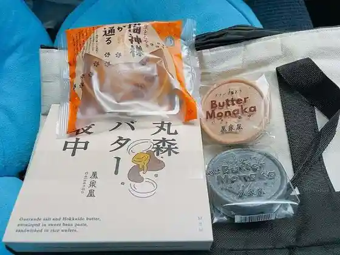
榮泉堂 丸森支店
Sakae Sendou Marumori Shiten
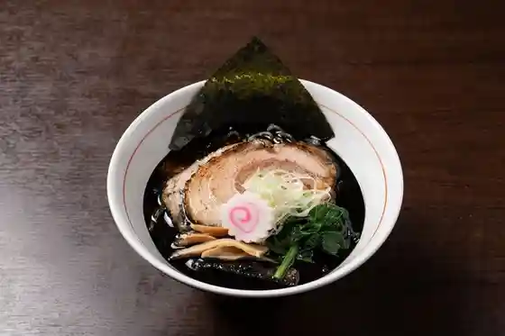
まんま亭 武藤
Manma Tei Mutou
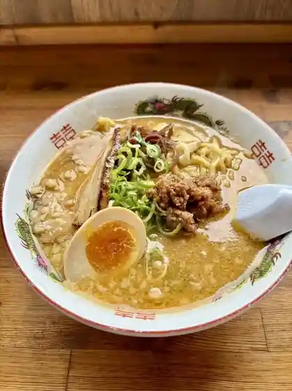
MARUMORI CAFE
MARUMORI CAFE
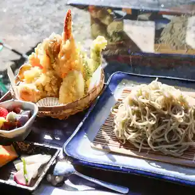
清流庵
Seiryuu Iori
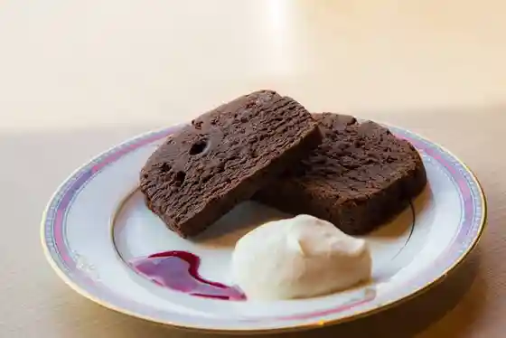
カフェ ペルシッカ
Kafe Perushikka
あぶくま荘
Abukuma Sou
カフェきっさこ
Kafe Kissako
丸森物産いちば 八雄館
Marumori Bussan Ichiba Hachio Kan
サトウ精肉店
Satou Seinikuten
白木屋
Shirokiya
まるもり食堂
Marumori Shokudo
大内特産品直売所
Oouchi Tokusanhin Chokubai Tokoro
なるほどらーめん
Naruhodoraamen
日本料理 桜坂
Nihonryouri Sakurazaka
チェンマイキッチン
Chenmaikitchin
カワカフェ ブルー アネックス
Kawakafe Buruu Anekkusu
麺こ夷
Men Ko Ebisu
やしまや
Yashimaya
ちくごや
Chikugoya
パン工房 彩々
Pan Koubou Saisai
わた福
Wata Fuku
あがらいん伊達屋
Agarain Date Ya
どっと堂 丸森本店
Dotto Dou Marumori Honten
蔵の郷土館 齋理屋敷 店蔵
Kura No Kyoudo Kan Sai Ri Yashiki Mise Kura
金八寿司
Kinpachi Sushi
新光食堂
Shinkou Shokudo
ドライブイン門間
Doraibuin Kadoma
MORI+
MORI
みずきの里 丸森
Mizukino Sato Marumori
カフェ・ステラ
カフェ・ステラ
志白屋
Kokorozashi Shiro Ya
猫神シフォンケーキ ねこるん
Neko Kami Shifonkeeki Nekorun
阿武隈ライン舟下り
Abukuma Rain Fune Kudari
ポン友飯店
Pon Tomo Hanten
地域交流拠点 まどい
Chiiki Kouryuu Kyoten Madoi
松寿司
Matsuzushi
孝寿司
Takashi Sushi
ふれあい農園直売所
Fureai Nouen Chokubai Tokoro
ひっぽのお店ふでいち
Hipponoo Mise Fudeichi
カフェ&カラオケtotomo
&totomo
お惣菜日々菜
O Souzai Hibi Na
青葉豆腐
Aoba Toufu
BAKU
BAKU
まんま亭 武藤
Manma Tei Mutou
豚しゃぶ&居酒屋 まるもつ
Buta Shabu & Izakaya Marumotsu
焼肉 光成苑
Yakiniku Mitsunari En
不動直売センター
Fudou Chokubai Sentaa
天水舎
Tensui Sha
荒浜屋
Arahama Ya
森工房
Mori Koubou
ファミリーマート 丸森大内店
Famiriimaato Marumori Oouchi Mise
猫入商店
Neko Nyuu Shouten
石塚養蜂園
Ishizuka Youhou Sono
カフェつぶっこ
Kafe Tsubukko
青雲閣
Seiun Kaku
とき田食品
Toki Ta Shokuhin
寿司長
Sushi Chou
セブンイレブン 丸森舘矢間店
Sebun'irebun Marumori Kan Yazama Mise
浪花屋旅館
Naniwa Ya Ryokan
あこがれ広場 えがお
Akogare Hiroba Egao
竹美屋
Takemi Ya
フレスコキクチ 丸森店
Furesukokikuchi Marumori Mise
デイリーヤマザキ 鳥屋店
Deiriiyamazaki Toriya Mise
Mammatei Ran
Mammatei Ran
Wild Boar Cuisine Kimpachi Sushi
Wild Boar Cuisine Kimpachi Sushi
Sairi Cafe
Sairi Cafe
Kozushi
Kozushi
Totoan Teuchi Soba Dokoro
Totoan Teuchi Soba Dokoro
Cawa Caffe
Cawa Caffe
Cafe Tsubukko
Cafe Tsubukko
Kaachanno Mise
Kaachanno Mise
Shokuji Dokoro Ichiriki
Shokuji Dokoro Ichiriki
Japanese Cuisine Sakurazaka
Japanese Cuisine Sakurazaka
Ore No Michi
Ore No Michi
Ajiichi Restaurant
Ajiichi Restaurant
Yamato An
Yamato An
Pon Yuhan
Pon Yuhan
Hoshinoya
Hoshinoya
Drive in Monma
Drive in Monma
Yoshisushi
Yoshisushi
GELATERIA LA FESTA
GELATERIA LA FESTA
Oyasumi Dokoro Koma
Oyasumi Dokoro Koma
Mori Sogo Kaikan
Mori Sogo Kaikan
Edomaezushi Anzai
Edomaezushi Anzai
Tonkatsu Chosuke
Tonkatsu Chosuke
Mitsunari Garden
Mitsunari Garden
Farmer s Restaurant Aij No Sato
Farmer s Restaurant Aij No Sato
Kohashoten
Kohashoten
Y Shop Hogikudo
Y Shop Hogikudo
Zokko
Zokko
Shop
Marumori Specialty Market Hachio Hall
Marumori specialty market — local produce and crafts
Sights
Sairi Yashiki Local Museum
Aikeiin Temple
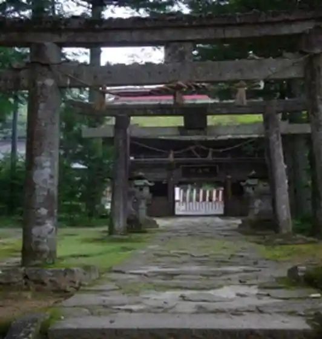
Daizoji Temple
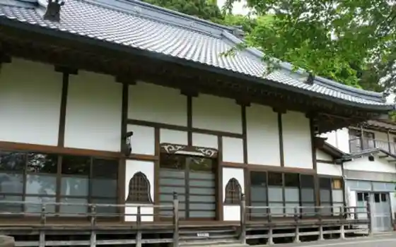
Marumori Hometown Hall
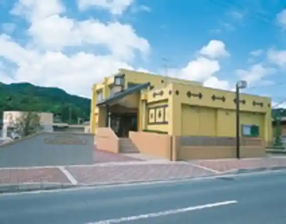
Mount Tegura Fir & Beech Primeval Forest
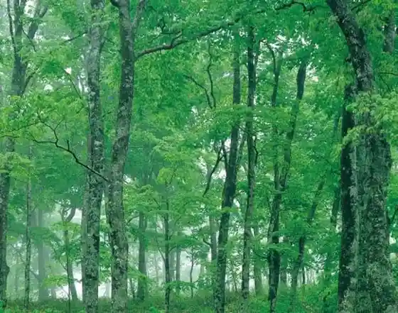